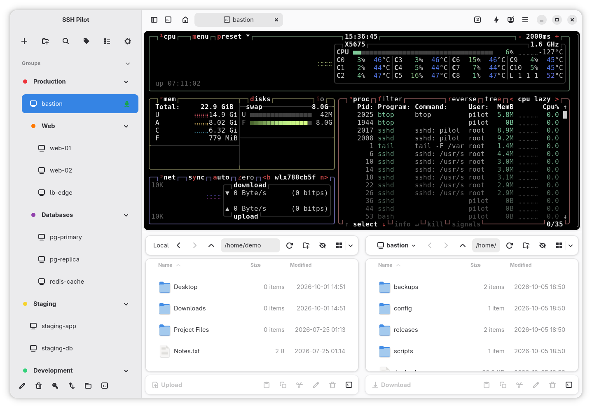

What it does
Uses your SSH config
Reads and writes ~/.ssh/config directly. There is no import step and no second copy of your hosts to keep in sync.
Terminal tabs and split view
An integrated terminal with tabs and splits. If you prefer your own terminal app, SSH Pilot opens sessions there instead.
Dual-pane SFTP
Move files between local and remote panes. SCP upload and download are built in.
Key management
Generate and copy a public key to a server, manage authorized keys and known hosts with convenience.
Docker containers
Inspect and manage the containers running on any connected host.
Server metrics
View detailed information about the server's status, hardware and bandwidth usage.
Install
Every package below comes from the latest release.
 Debian / Ubuntu / Mint →.deb package
Fedora / RHEL →.rpm package
Arch Linux →AUR
Flatpak →Flathub
macOS →.dmg installer
Windows →installer
Debian / Ubuntu / Mint →.deb package
Fedora / RHEL →.rpm package
Arch Linux →AUR
Flatpak →Flathub
macOS →.dmg installer
Windows →installer
Windows installer: Code signing policy · Privacy
Ubuntu PPA
sudo add-apt-repository ppa:mfat/sshpilot sudo apt update sudo apt install sshpilot
Fedora / RHEL COPR
sudo dnf copr enable mahdif62/sshpilot sudo dnf install sshpilot
In the press
All reviews →
French · korben.info
Korben →
Korben covers SSH Pilot as a connection manager for Linux, pointing to its straightforward workflow and integrated terminal.
German · linuxundich.de
Linux und Ich →
Linux und Ich presents SSH Pilot as a Linux alternative to PuTTY and SecureCRT, with a lean interface and practical management tools.